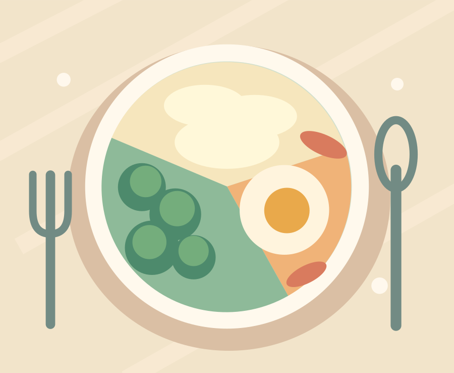

早餐｜補充能量
趕早八也可以準備三明治、蛋或其他方便攜帶的食物。

EVERYDAY EATING
以下是簡單示例，不是固定菜單。
趕早八也可以準備三明治、蛋或其他方便攜帶的食物。
在餐盤裡留一些位置給蔬菜，搭配主食與蛋白質食物。
讀書前先吃一餐，避免忙到很晚才發現自己忘記吃飯。
SIMPLE DAILY BUDGET
每天花多少錢因人而異。這裡用假設數字示範，重點是學會分類與記錄。
| 項目 | 假設金額 |
|---|---|
| 早餐 | NT$ 60 |
| 午餐 | NT$ 100 |
| 晚餐 | NT$ 110 |
| 交通與其他 | NT$ 50 |
| 合計 | NT$ 320 |
ONE MORE THING
想知道自己的校園生活小知識夠不夠？挑戰四題測驗！